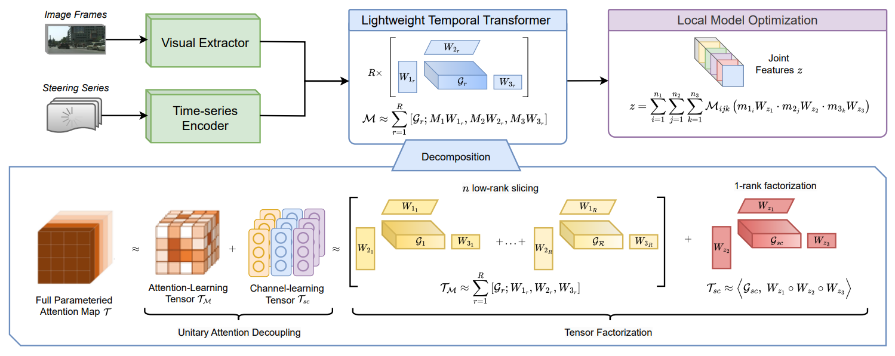

Problem Statement
To address data privacy, several autonomous driving approaches utilize federated learning to train decentralized models across multiple vehicles. However, most autonomous driving models still rely on single-frame inputs and develop relatively simple networks to enable feasible training in a federated learning setup. This single-frame approach overlooks the temporal data that each vehicle collects over time, which can provide essential context for understanding motion patterns, tracking objects, and anticipating potential hazards. As a result, these models do not fully leverage the sequence of information needed to better predict and respond to dynamic driving scenarios, ultimately limiting their performance and adaptability.
In this paper, our goal is to develop a federated autonomous driving framework that incorporates temporal information as input. To address the complexity and learning challenges of the fusion model when training in a federated scenario using temporal information, we propose a Lightweight Temporal Transformer, a new approach designed to reduce the complexity of the network in each silo by efficiently approximating the information from the inputs. Our method utilizes a decomposition method under unitary attention to break down learnable attention maps into low-rank ones, ensuring that the resulting models remain lightweight and trainable. By reducing model complexity, our approach enables the network to use temporal data while ensuring convergence. Intensive experiments demonstrate that our approach significantly improves performance over state-of-the-art methods in federated autonomous driving.
The figure below shows the comparison between traditional single-frame solutions for federated autonomous driving (a) and our lightweight temporal transformer network to enhance the training feasibility in federated learning setup (b).
Methodology
Apart from X-ray images collected from our real robot, we also collect an EISimulation dataset from the CathSim simulator for simulated X-ray images. We manually label both data from the robot and CathSim simulator to use them in downstream tasks. We note that the datasets used to train the foundation model are not being used in downstream endovascular understanding tasks.We propose a Lightweight Temporal Transformer Decomposition method for federated autonomous driving, where a network of vehicles collaboratively trains a global driving policy by aggregating local weights from each vehicle. We minimize a local regression loss using mean squared error to predict steering angles from joint features extracted from temporally ordered RGB images and steering series. We employ unitary attention decoupling to reduce large tensors into smaller ones, followed by tensor factorization to decompose attention maps into factor matrices, ensuring our model is lightweight for real-time predictions on edge devices while preserving critical temporal information, with evaluations across three datasets confirming its effectiveness.
The figure below shows an overview of our lightweight temporal transformer decomposition method for federated autonomous driving.

Experiments
Table below shows a comparison between our approach and state-of-the-art methods, both with and without temporal information. The results demonstrate a clear performance advantage, as our method achieves notably lower RMSE and MAE across all three datasets: Udacity+, Carla, and Gazebo.
Performance comparison between different methods. The Gaia topology is used. RMSE is used as bechmarking metric.
| Method |
Udacity+ |
Gazebo |
Carla |
#Params (M) |
Avg. Cycle Time (ms) |
| MobileNet | 0.193 | 0.083 | 0.286 | 2.22 | – |
| DroNet | 0.183 | 0.082 | 0.333 | 0.31 | – |
| St-p3 | 0.092 | 0.071 | 0.132 | 1247.87 | – |
| ADD | 0.097 | 0.049 | 0.166 | 3234.22 | – |
| HPO | 0.088 | 0.044 | 0.157 | 5990.19 | – |
| FedAvg | 0.212 | 0.094 | 0.269 | 0.31 | 152.4 |
| FedProx | 0.152 | 0.077 | 0.226 | 0.31 | 111.5 |
| STAR | 0.179 | 0.062 | 0.208 | 0.31 | 299.9 |
| FedTSE | 0.144 | 0.063 | 0.079 | 89.1 | 1172 |
| TGCN | 0.137 | 0.069 | 0.193 | 78.33 | 224 |
| Fed-STGRU | 0.129 | 0.059 | 0.151 | 91.01 | 370 |
| BFRT | 0.113 | 0.054 | 0.111 | 427.26 | 1256 |
| MFL | 0.108 | 0.052 | 0.133 | 173.87 | 781 |
| CDL | 0.141 | 0.062 | 0.183 | 0.63 | 72.7 |
| MATCHA | 0.182 | 0.069 | 0.208 | 0.31 | 171.3 |
| MBST | 0.183 | 0.072 | 0.214 | 0.31 | 82.1 |
| FADNet | 0.162 | 0.069 | 0.203 | 0.32 | 62.6 |
| PriRec | 0.137 | 0.066 | 0.196 | 325.57 | 272 |
| PEPPER | 0.124 | 0.055 | 0.115 | 89.13 | 438 |
| Ours (CLL) | 0.088 | 0.045 | 0.091 | 5.01 | – |
| Ours (SFL) | 0.107 | 0.049 | 0.072 | 5.01 | 180 |
| Ours (DFL) | 0.091 | 0.043 | 0.076 | 5.01 | 121 |